Important
Assemblée Générale du Club
Venez participer à notre assemblée générale à la maison de quartier de Beausoleil. Bilan 2025, projets 2026 et convivialité au programme.
Lire plusSarreguemines, Moselle
Courez Avec Nous
Débutant ou confirmé, trails ou routes — Rejoignez notre communauté de passionnés de course à pied depuis 1980
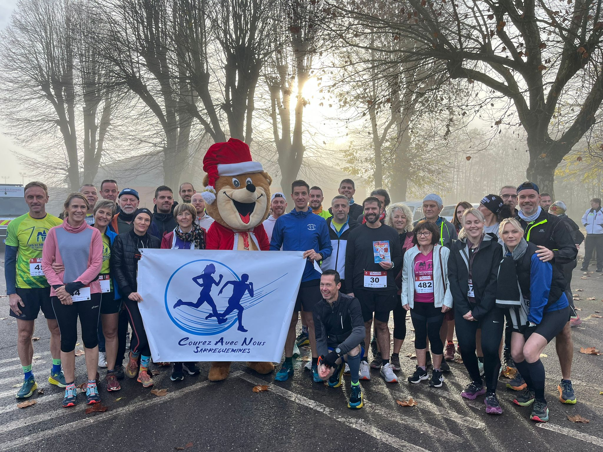
Freyming 2025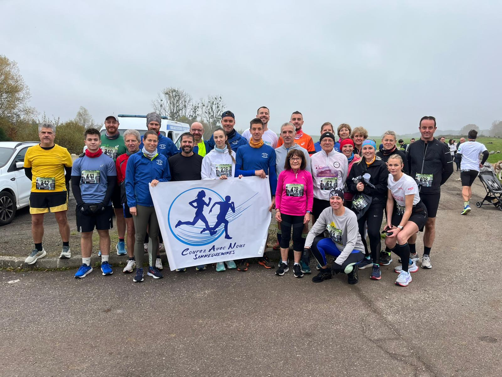
Dieblingeoise 2025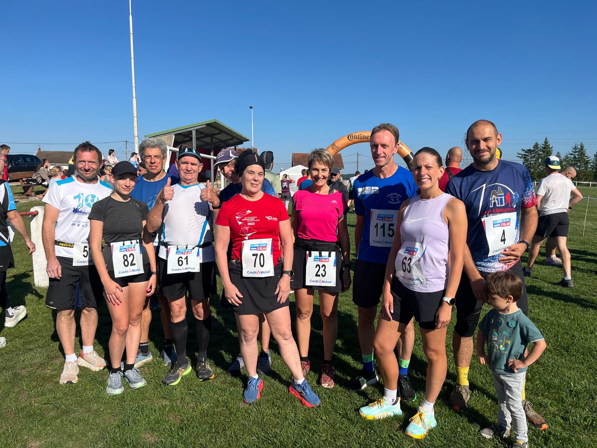
Hilsprich 2025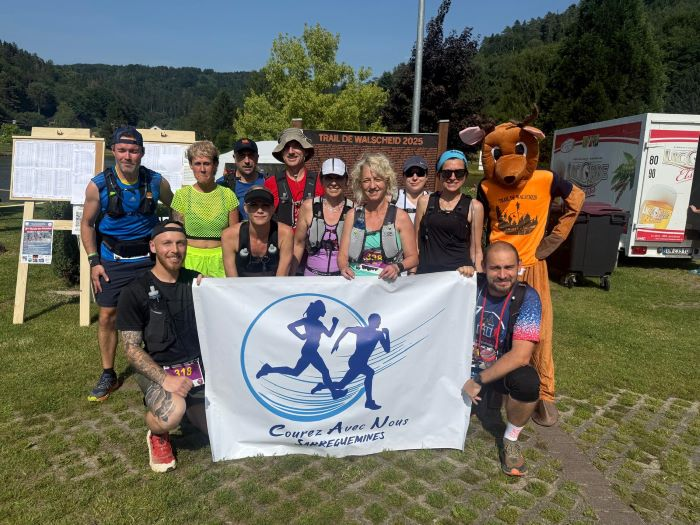
Trail Walscheid 2025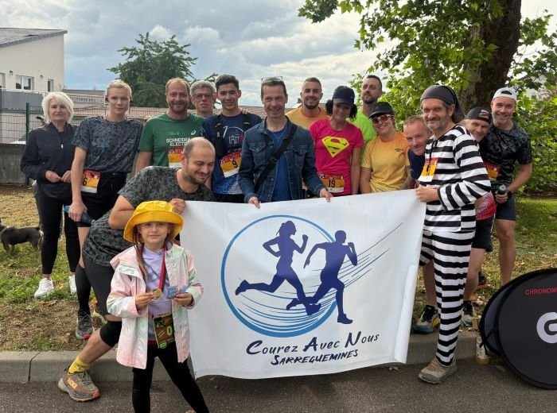
Spit'Trail 2025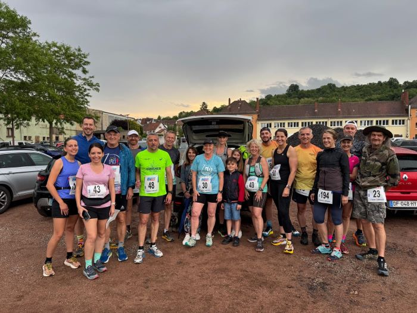
Grand 8 Cobach 2025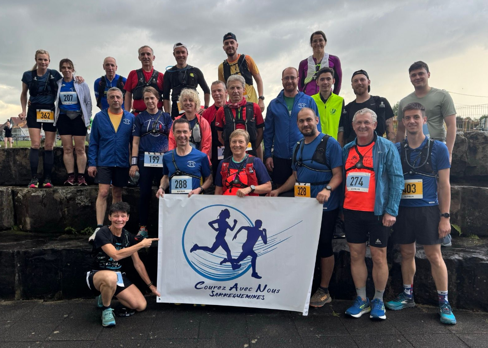
Trail des Verriers 2025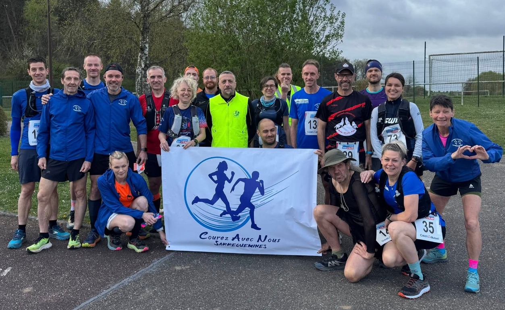
Walditrail 2025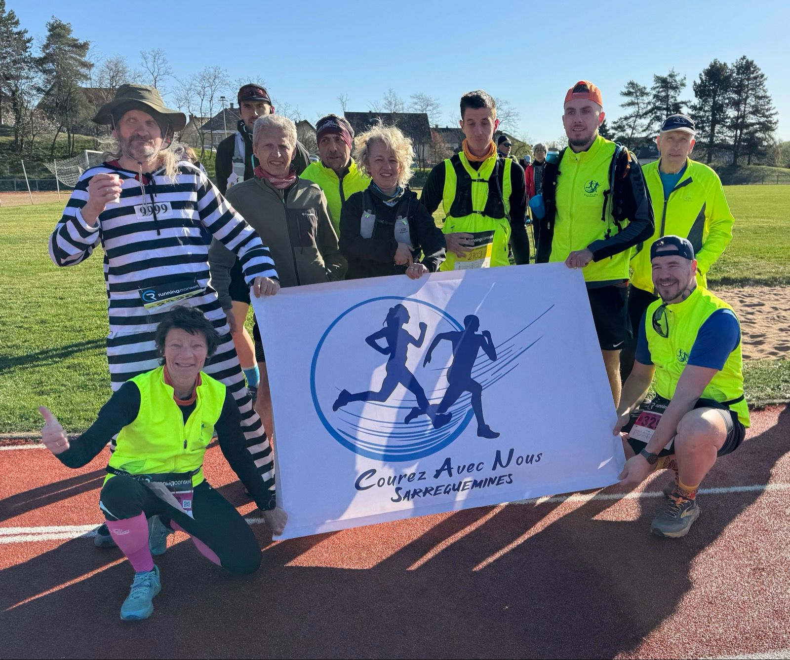
Niederbronn 2025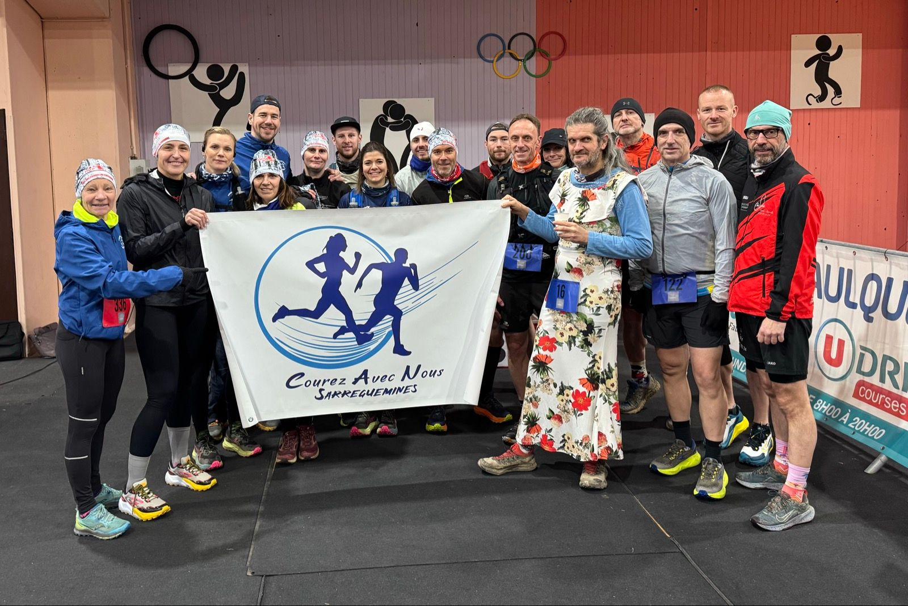
Trail Créhange 2025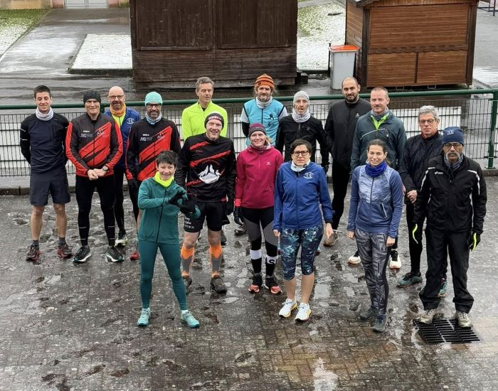
Sortie Épiphanie 2025Venez participer à notre assemblée générale à la maison de quartier de Beausoleil. Bilan 2025, projets 2026 et convivialité au programme.
Lire plusBelle participation caniste à la Silvesterlauf de Sarrebruck.
Voir classementExcellentes performances lors des foulées de Noël à Stiring-Wendel (8,4 km).
Voir classementAvril–Septembre : Mardi & Jeudi à 18h30 — Chemin du Moulin (Sarreguemines)
Octobre–Mars : Mardi & Jeudi à 18h30 — Parking Gymnase Lycée Technique
Calendrier indicatif basé sur la saison 2025. Les dates 2026 seront confirmées progressivement. ⭐ = épreuves organisées par le CAN. Source : Courir en Moselle
Le Challenge interne, instauré en 1987, récompense toutes les catégories sur des courses désignées tout au long de l'année, au prorata du temps.
Course urbaine sur route homologuée, organisée chaque automne depuis 1980. Rendez-vous incontournable du calendrier sportif sarregueminois.
Course solidaire ouverte à tous, organisée chaque été. Course à pied, marche ou nordic walking — sans chronométrage ni classement, pour la bonne cause.
L'épreuve d'endurance ultime organisée par le CAN Sarreguemines. Un format unique : courir en boucles de ~6,7 km toutes les heures, le dernier en piste gagne.
Retrouvez toutes nos photos de course et d'événements sur Flickr
Voir la galerieRevivez les arrivées et moments forts de nos courses en vidéo sur YouTube
Voir la chaîneActualités, photos et événements en temps réel sur notre page Facebook
Suivre la pageNotre bulletin officiel depuis 1979 — disponible en archives numériques
Lire le bulletinFondé en janvier 1980, le CAN (Courez Avec Nous) Sarreguemines est un club d'athlétisme convivial de course à pied en Moselle.
Débutants comme confirmés, coureurs de routes comme de trails — tous sont bienvenus ! Entraînements plurihebdomadaires et participations collectives à de nombreuses courses régionales.
Mardi & Jeudi à 18h30
Avr.–Sep. : Chemin du Moulin
Oct.–Mar. : Gymnase Lycée Technique
Plus de 45 ans d'histoire, de convivialité et de passion pour la course à pied en Moselle.
Depuis 1987, notre challenge récompense tous les membres participants aux courses désignées.
Notre bulletin officiel depuis 1979. Des archives complètes dès le pré-numéro.
Rejoignez le CAN Sarreguemines — club convivial, tous niveaux, depuis 1980
10, rue Jean Baptiste Barth
57200 SARREGUEMINES
Mardi & Jeudi 18h30
Avr–Sep : Buchholz (rue Roth)
Oct–Mar : Lycée Technique
9h00 — Forêt du Buchholz
Stade Pierre de Coubertin
57200 SARREGUEMINES

Choisissez votre formule d'adhésion 2026